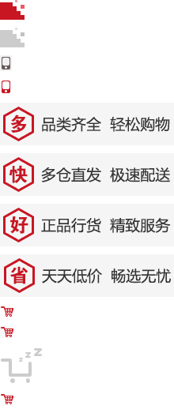

1. CSS用户界面样式
所谓的界面样式， 就是更改一些用户操作样式， 比如 更改用户的鼠标样式， 表单轮廓等。但是比如滚动条的样式改动受到了很多浏览器的抵制，因此我们就放弃了。 防止表单域拖拽
1.1 鼠标样式cursor
设置或检索在对象上移动的鼠标指针采用何种系统预定义的光标形状。
cursor : default 小白 | pointer 小手 | move 移动 | text 文本
鼠标放我身上查看效果哦：
- 我是小白
- 我是小手
- 我是移动
- 我是文本
尽量不要用hand 因为 火狐不支持 pointer ie6以上都支持的尽量用
1.2 轮廓 outline
是绘制于元素周围的一条线，位于边框边缘的外围，可起到突出元素的作用。
outline : outline-color ||outline-style || outline-width
但是我们都不关心可以设置多少，我们平时都是去掉的。
最直接的写法是 ： outline: 0;
未去掉轮廓之后所示：
去掉轮廓之后所示：
1.3 防止拖拽文本域resize
resize：none 这个单词可以防止 火狐 谷歌等浏览器随意的拖动 文本域。
右下角可以拖拽：
右下角不可以拖拽：
2.vertical-align 垂直对齐
以前我们讲过让带有宽度的块级元素居中对齐，是margin: 0 auto;
以前我们还讲过让文字居中对齐，是 text-align: center;
但是我们从来没有讲过有垂直居中的属性， 我们的妈妈一直很担心我们的垂直居中怎么做。
vertical-align 垂直对齐， 这个看上去很美好的一个属性， 实际有着不可捉摸的脾气，否则我们也不会这么晚来讲解。
vertical-align : baseline |top |middle |bottom
设置或检索对象内容的垂直对其方式。
vertical-align 不影响块级元素中的内容对齐，它只针对于 行内元素或者行内块元素，特别是行内块元素， 通常用来控制图片和表单等。
2.1 图片和文字对齐
所以我们知道，我们可以通过vertical-align 控制图片和文字的垂直关系了。 默认的图片会和文字基线对齐。
| 模式 | 单词 |
基线对齐：
 默认的是文字和图片基线对齐 默认的是文字和图片基线对齐
|
vertical-align: baseline; |
|
垂直居中：
默认的是文字和图片基线对齐
|
vertical-align: middle; |
|
顶部对齐：
默认的是文字和图片基线对齐
|
vertical-align: top; |
2.2 去除图片底侧空白缝隙
有个很重要特性你要记住： 如果一个元素没有基线，比如图片或者表单等行内块元素，则他的底线会和父级盒子的基线对齐。 这样会造成一个问题，就是图片底侧会有一个空白缝隙。
解决的方法就是：
- 给img vertical-align:middle | top等等。 让图片不要和基线对齐。

- 给img 添加 display：block; 转换为块级元素就不会存在问题了。

3.CSS精灵技术（sprite）
3.1 精灵技术产生的背景

图所示为网页的请求原理图，当用户访问一个网站时，需要向服务器发送请求，网页上的每张图像都要经过一次请求才能展现给用户。
然而，一个网页中往往会应用很多小的背景图像作为修饰，当网页中的图像过多时，服务器就会频繁地接受和发送请求，这将大大降低页面的加载速度。为了有效地减少服务器接受和发送请求的次数，提高页面的加载速度，出现了CSS精灵技术（也称CSS Sprites、CSS雪碧）。
3.2 精灵技术本质
简单地说，CSS精灵是一种处理网页背景图像的方式。它将一个页面涉及到的所有零星背景图像都集中到一张大图中去，然后将大图应用于网页，这样，当用户访问该页面时，只需向服务发送一次请求，网页中的背景图像即可全部展示出来。通常情况下，这个由很多小的背景图像合成的大图被称为精灵图，如下图所示为京东网站中的一个精灵图。

3.3 精灵技术的使用
CSS 精灵其实是将网页中的一些背景图像整合到一张大图中（精灵图），然而，各个网页元素通常只需要精灵图中不同位置的某个小图，要想精确定位到精灵图中的某个小图，就需要使用CSS的background-image、background-repeat和background-position属性进行背景定位，其中最关键的是使用background-position属性精确地定位。
3.4 制作精灵图
CSS 精灵其实是将网页中的一些背景图像整合到一张大图中（精灵图），那我们要做的，就是把小图拼合成一张大图。
大部分情况下，精灵图都是网页美工做。
1.我们精灵图上放的都是小的装饰性质的背景图片。 插入图片不能往上放。
2.我们精灵图的宽度取决于最宽的那个背景。
3.我们可以横向摆放也可以纵向摆放，但是每个图片之间，间隔至少隔开偶数像素合适。
4.在我们精灵图的最低端，留一片空隙，方便我们以后添加其他精灵图。
结束语： 小公司，背景图片很少的情况，没有必要使用精灵技术，维护成本太高。 如果是背景图片比较多，可以建议使用精灵技术。